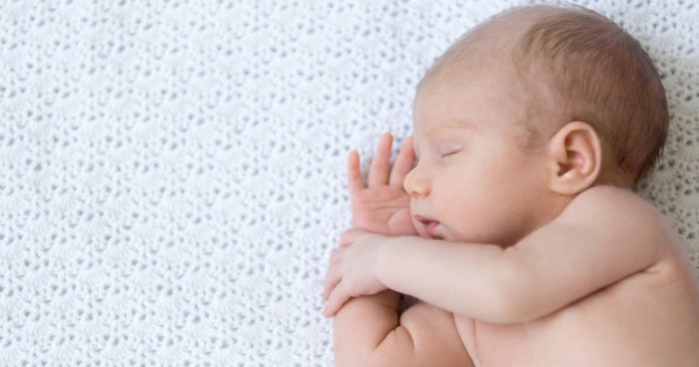

မွေးကင်းစ ကလေးပျော့ခွေခြင်း

သင့်ရဲ့ကလေး ဒါမှမဟုတ် သင့်ရဲ့ပတ်ဝန်းကျင်မှာ ဖွံ့ဖြိုးမှုနှေးကွေးတဲ့သူတွေကို မြင်ဖူးပါသလား။ ကောင်းကောင်းမတ်တပ်မရပ်နိုင်၊ ဇက်မခိုင်တဲ့ကလေးငယ်တွေကို တွေ့ဖူးပါသလား။ အဖြစ်နည်းတဲ့အပြင် လူသိလည်းနည်းတာမို့ ဒီရောဂါအကြောင်းကို ရှာဖွေလေ့လာပြီး တင်ပြလိုက်ပါတယ်။
.
.
.
မွေးကင်းစကလေးငယ်တွေမှာ ခန္ဓာကိုယ်နဲ့အဆစ်တွေ လှုပ်ရှားမှုအတွက် ကြွက်သားတုံ့ပြန်မှုအားနည်းတဲ့ ရောဂါတစ်ခုရှိပါတယ်။ ဒါကို Floppy Infant Syndrome ( FIS) လို့ ခေါ်ပါတယ်။ မွေးဖွားပြီးချင်း မိနစ်အနည်းငယ်အတွင်းမှာပဲ ဒီရောဂါ ရှိ၊ မရှိကို ဆရာဝန်တွေက သိနိုင်ပါတယ်။ ကလေးအများစုက လောကထဲစဝင်လာတာနဲ့ ငိုပြီးအကြောက်အကန်ရုန်းပြီး ထွက်လာကြတာပါပဲ။ ဒါပေမဲ့ ကြွက်သားတုံ့ပြန်မှု အားနည်းတဲ့ကလေးကျတော့ ခြေလက်လှုပ်ရှားမှုမှာ အားမပါနိုင်တော့ပါဘူး။ ဒီရောဂါရဲ့ နောက်ဆက်တွဲဆိုးကျိုးကတော့ ကလေးငယ်တွေ ကြီးထွားဖွံ့ဖြိုးမှုပိုင်းမှာ ပြဿနာဖြစ်စေနိုင်ပါတယ်။
မွေးစကလေး ပျော့ခွေခြင်းလို့ခေါ်ရတဲ့အကြောင်းကတော့ ကလေးငယ်ရဲ့လက်မောင်း၊ လက်ကောက်ဝတ်၊ ဒူးခေါင်းနဲ့ ဦးခေါင်းပိုင်း အနေအထားများက ထိန်းချုပ်နိုင်စွမ်းမရှိဘဲ ပျော့တွဲနေတာကြောင့် ဖြစ်ပါတယ်။ ကလေးကိုချီထားရတာထက် အရုပ်တစ်ရုပ်ကို မချီထားရတာနဲ့ပိုတူပါတယ်။
ဥပမာ အနေနဲ့ ပုံမှန်ကလေးတစ်ယောက်ဟာ လက်မောင်းကွေးပြီးပြန်ဆန့်ဖို့အတွက် အချိန်ဘယ်လောက်မှမကြာဘဲ ပြန်ဆန့်နိုင်ပါတယ်။ ဒီရောဂါရှိနေတဲ့ ကလေးတစ်ယောက် လက်ပြန်ဆန့်ဖို့ဆိုတာ ကြွက်သားတုံ့ပြန်မှုအား နည်းတာကြောင့် အချိန်တော်တော်ယူရပါတယ်။ ဒါတွေအပြင် တခြားလက္ခဏာတွေလည်း ရှိပါသေးတယ်။
ကလေးငယ်ဟာ ဦးခေါင်းလှုပ်ရှားမှုကို ထိန်းချုပ်နိုင်စွမ်းအားနည်းပြီး ဇက်လည်နေခြင်း
အသက်အရွယ်နှင့်အလိုက် ဖွံ့ဖြိုးမှုပိုင်းဆိုင်ရာ နှေးကွေးခြင်း
မေးရိုးနှင့် တင်ပါးဆုံရိုးများ မကြာခဏအဆစ်လွဲခြင်း
ကြွက်သားဖွံ့ဖြိုးမှုအားနည်းသည့်အတွက် ကြွက်သားသိမ်လာခြင်း
ချောင်းဆိုးရခက်ခဲခြင်း
အစာမျိုချရခက်ခဲခြင်းများ ဖြစ်တတ်ပါတယ်။
ဒီလက္ခဏာတွေက အသက် ၆ လ မှ ၁ နှစ်ကြား တွေ့မြင်နိုင်တဲ့ လက္ခဏာရပ်များဖြစ်ပါတယ်။ ဒီလက္ခဏာတွေကို သင့်ကလေးမှာတွေ့ရှိပြီဆိုရင် ဆရာဝန်နဲ့ တိုင်ပင်ဆွေးနွေးသင့်ပါတယ်။ လိုအပ်တဲ့ ကျန်းမာရေးစစ်ဆေးမှုတွေ ဖြစ်တဲ့ သွေးစစ်ခြင်း၊ ကွန်ပျူတာဓာတ်မှန်ရိုက်ခြင်း၊ ကြွက်သားစစစ်ဆေးခြင်း၊ သံလိုက်ဓာတ်မှန်ရိုက်ခြင်းများကို ပြုလုပ်ဖို့ လိုအပ်ပါတယ်။
ဖြစ်ပွားစေသည့် အကြောင်းအရင်းများ
ဒီရောဂါကိုဖြစ်စေသည့် အကြောင်းအရင်းများစွာကို ခွဲခြားလိုက်ရင် နှစ်မျိုး ထွက်လာပါတယ်။ မွေးရာပါ အကြောပျော့ရောဂါနှင့် မွေးဖွားပြီးနောက်ပိုင်းမှ အကြောင်းတစ်စုံတစ်ရာကြောင့် ဖြစ်ပွားခြင်းဆိုပြီး ခွဲခြားလိုက်ပါတယ်။ အဖြစ်များတဲ့အကြောင်းအရင်းတွေကတော့
Down’s syndrome – အားလုံးမြင်ဖူးကြမှာပါ။ ဒီရောဂါခံစားနေရတဲ့ကလေးငယ်တွေရဲ့ မျက်နှာသွင်ပြင်ဟာတူူတူပါပဲ။
Cerebral Palsy လို့ခေါ်တဲ့ မွေးရာပါ ဖွံဖြိုးမှုနှေးကွေးသောရောဂါ
Myasthenia Gravis Syndrome ဆိုတဲ့ ကြွက်သားအားနည်းရောဂါ
ခြေလက်များဆာခြင်း သို့မဟုတ် ကြွက်သားလှုပ်ပုံမူမမှန်သောရောဂါ
ကြွက်သားသိမ်ရောဂါ
ဦးနှောက်ဒဏ်ရာရသူတွေပဲ ဖြစ်ပါတယ်။
ကုသနည်းများ
မွေးကင်းစကလေးပျော့ခွေခြင်းရောဂါ ကုသဖို့အတွက် တစ်သမတ်တည်း ကုသနည်းတော့မရှိသေးပါဘူး။ ရောဂါဖြစ်စေတဲ့အကြောင်းတရားနဲ့ ရောဂါလက္ခဏာပေါ်မူတည်ပြီးတော့ ကုသမှုပုံစံအမျိုးမျိုး ရှိပါတယ်။ ကြွက်သားတုံ့ပြန်မှု အားကောင်းအောင် လှုံ့ဆော်ပေးတဲ့ ကိုယ်လက်လှုပ်ရှားကုသမှုနဲ့ ကုသနိုင်ပါတယ်။
တကယ်လို့ သင်ကလေးမှာ ဒီရောဂါတွေ ဖြစ်နေမလားလို့ သံသယရှိခဲ့ရင် ဆရာဝန်ဆီကို တတ်နိုင်သမျှ မြန်မြန်သွားဖို့ လိုအပ်ပါတယ်။ စောစောသိ မြန်မြန်ကုမှ ရောဂါကိုတားဆီးနိုင်မှာပါ။
သင်သာ ယခုအချိန်မှာ ကိုယ်ဝန်နဲ့ဖြစ်နေရင်၊ မွေးဖွားလာမယ့်သင့်ကလေးကို ဒီရောဂါမဖြစ်စေချင်ရင် ဆရာဝန်မညွှန်ကြားဘဲ မိမိသဘောနဲ့မိမိ ဘာဆေးမှမသောက်သုံးပါနဲ့။ အဓိကအားဖြင့် ဦးနှောက်နဲ့ အာရုံကြောကို ထိခိုက်စေမယ့် Benzodiazepine ( ဒိုင်ယာစီပင်) သောက်သုံးခြင်းကို အထူးရှောင်ကြဉ်ရပါမယ်။ အာဟာရပြည့်ဝမယ့် သဘာဝကရရှိတဲ့ အစားအစာတွေကိုပဲ ရွေးချယ်စားသုံးပါ။
ဒီရောဂါဟာ တစ်သက်လုံးဖြစ်သွားနိုင်တဲ့ရောဂါဖြစ်ပေမယ့် စောစောသိပြီး မြန်မြန်ဆန်ဆန်ကုသနိုင်ရင် ပုံမှန် လူကောင်းနီးပါးအတိုင်း နေထိုင်သွားနိုင်ပါတယ်။ ဒါ့အပြင် မိသားစုနဲ့ ပတ်ဝန်းကျင်ရဲ့ ဖေးမကူညီမှုတွေလည်း လိုအပ်ပါသေးတယ်။
Source-Paing